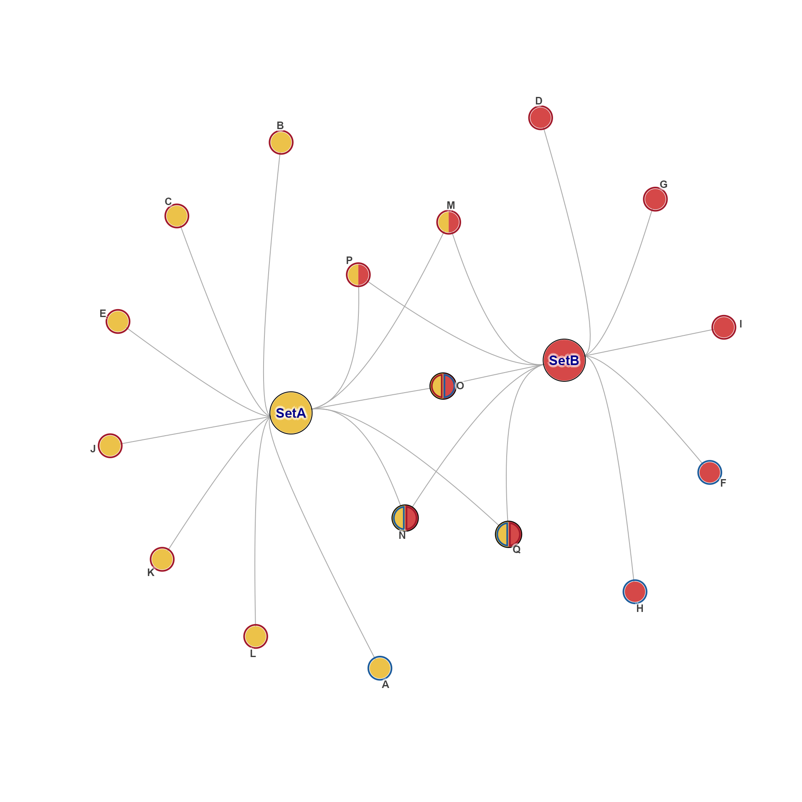
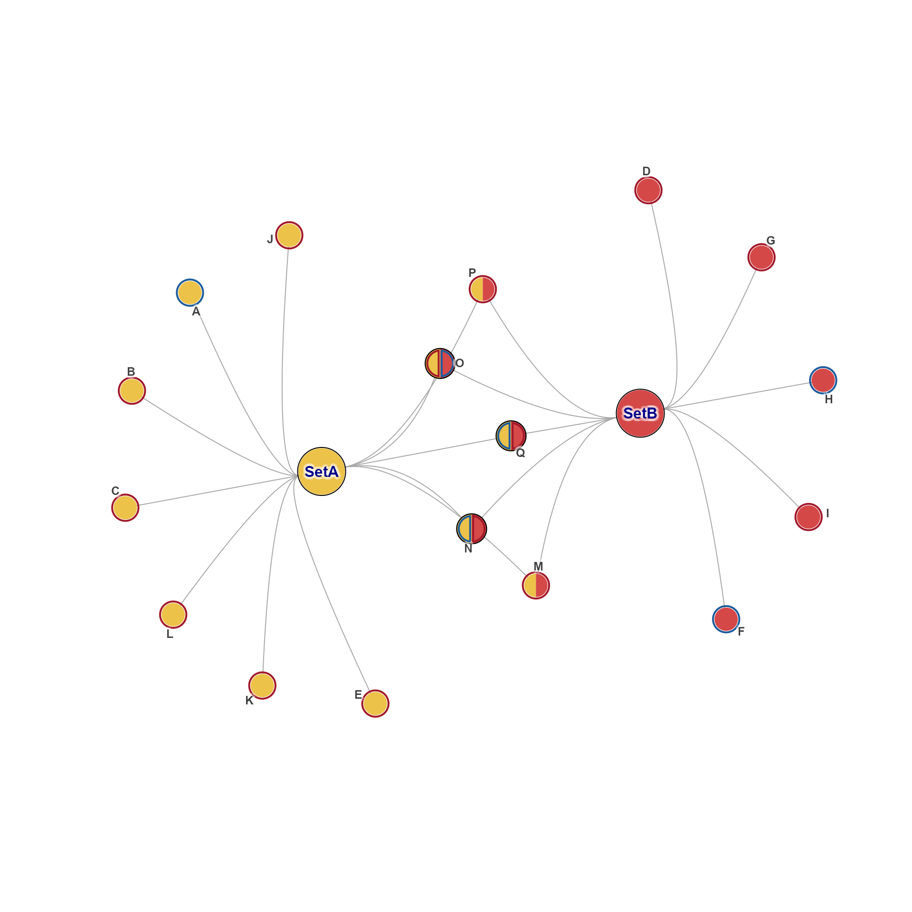
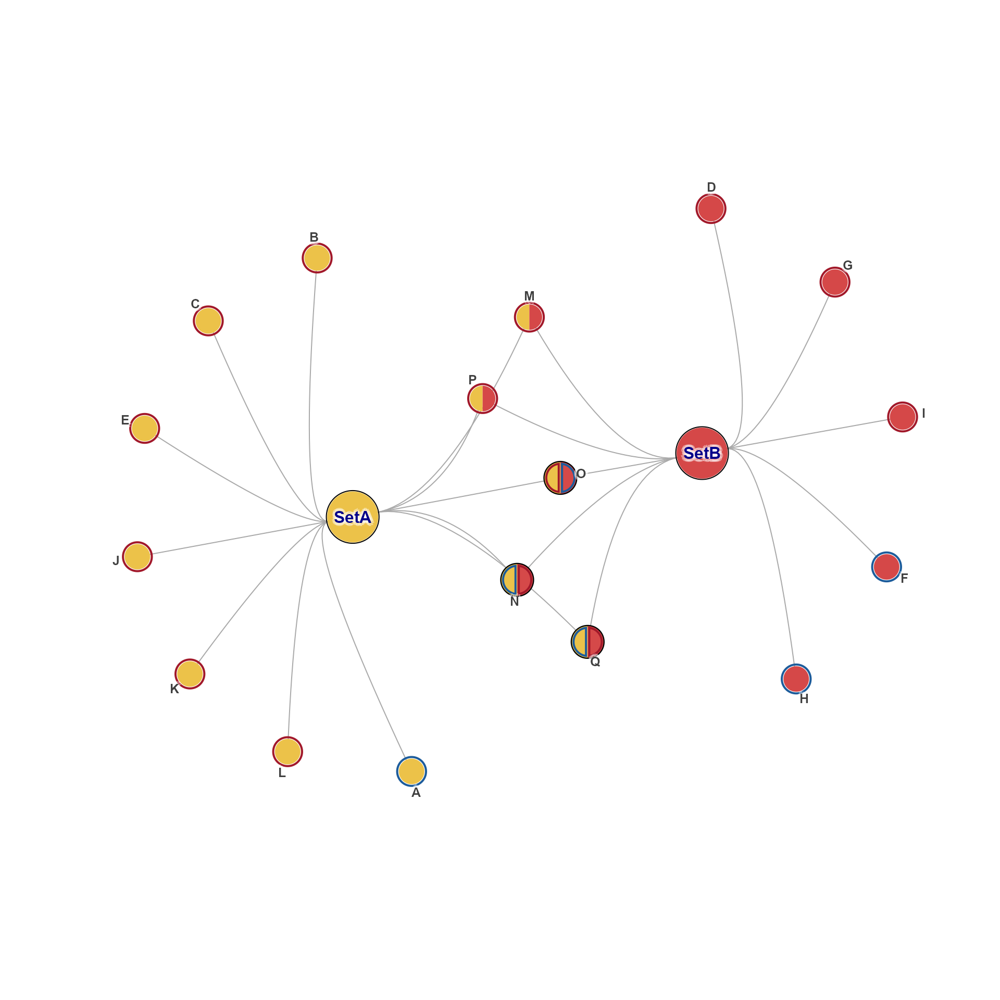

Obtain or create layout for igraph object
Source:R/jamenrich-get-igraph-layout.R
get_igraph_layout.RdObtain or create layout for igraph object
Set the node layout for an igraph object
Usage
get_igraph_layout(
g,
layout = NULL,
default_layout = igraph::layout_nicely,
verbose = FALSE,
...
)
set_igraph_layout(
g,
layout = NULL,
default_layout = igraph::layout_nicely,
verbose = FALSE,
prefer = c("graph_attr"),
spread_labels = FALSE,
...
)Arguments
- g
igraphobject- layout
is always applied when not NULL, even when layout exists in
g. Input should be one of:numericmatrix of layout coordinates, withnrow(layout)equal to the number of nodesigraph::vcount(g).functionthat takesigraphinput, and returnsnumericmatrix of layout coordinates.NULL: default, uses the graph attribute 'layout' if it exists,igraph::graph_attr(g, "layout")if it exists. If it does not exist, it followsdefault_layout.
- default_layout
is only applied when
layoutis NULL, and no layout is defined in graphg. Input should befunctionor NULL:Default
igraph::layout_nicely()is used for consistency with igraph conventions. This algorithm should be safe for very large graphs, which may be extremely inefficient withlayout_with_qfr()for example.When NULL, it will return NULL unless layout is defined in the input
ggraph.
- verbose
logicalindicating whether to print verbose output.- ...
additional arguments are passed to any layout function called.
- prefer
charactervector with preferred method of storage:'graph_attr': store the
matrixin graph attribute 'layout'.'vertex_attr': store coordinates in vertex attributes 'x', 'y', and optionally 'z' when defined.
- spread_labels
logicaldefault FALSE, whether to callspread_igraph_labels()to re-position node labels radially away from incoming edges.Note that
spread_igraph_labels()also by defaultdo_reorder=TRUEwhich will re-order nodes by color, border, label, and name.It is used to use TRUE when node labels were previously spread, so that the angle of offset is updated per the new layout coordinates.
Value
get_igraph_layout() returns a numeric matrix when:
the input graph g contains
layout as a graph attribute as either numeric matrix or function,
or coordinates as x,y,z vertex attributes.
However, when there is no layout defined in
ganddefault_layoutis NULL, it returns NULL. This logic is used to avoid defining a layout if it does not already exist.When
matrixis returned, the number of rows matches the input graphgusingigraph::vcount(g). Allrownames()are defined to match vertex name when it exists, usingigraph::V(g)$name.
set_igraph_layout() returns igraph object with
layout defined per function arguments.
Details
This function is a simple helper function intended to retrieve
the node layout for an igraph object.
The layout is defined with the following priority:
When
layoutis supplied as an argument, it is used. When it is afunctionit is applied togto produce numericmatrix; otherwise it should be a numericmatrixand is used as-is.When graph attribute 'layout' is defined, it is used as described for argument
layoutabove, accepting eitherfunctionormatrixvalues.When vertex attributes 'x' and 'y' are defined, optionally 'z', their values are used to produce a numeric
matrix.When
default_layoutis supplied as afunctionit is applied to graphgto produce a numericmatrix.Finally, when
default_layoutis NULL, this function returns NULL. This fallback is intended only when it is desirable not to apply a new layout function, useful for large graphs.
Additional rules
When
layoutis defined as a matrix with rownames, the rownames are matched to vertex attribute 'name' if it exists, usingigraph::V(g)$name. This step is intended to help ensure nodes the layout can be supplied in any order without regard to the order defined in graphg.When the
layoutrownames do not match vertex names, this function willstop().
When
layoutis defined as afunction, or when any layout function is applied as relevant, it is expected to return anumericmatrix, or data which can be coerced to amatrixwithas.matrix()oras(x, "matrix").The matrix rownames are matched to vertex names as described above.
Note that
data.framerownames are only retained at this step when they were already explicitly defined before coersion tomatrix.
Suggested Usage
Define
layoutas a function in order to force the use of that function to produce layout coordinates. This step would always ignore pre-existing layout coordinates in graphg.Define
layoutas NULL, anddefault_layoutas a function, to use an existing layout stored in graphg, then to apply the default layout function only if no layout already existed in graphg.Define
layoutas NULL, anddefault_layoutas NULL, to return an existing layout stored in graphg, otherwise to return NULL without applying any layout. This option would avoid computationally expensive layout for large graphs, for example.
This function is a simple wrapper to get_igraph_layout() which
also defines the resulting layout in the graph g.
See also
Other jam utility functions:
ashape(),
avg_angles(),
avg_colors_by_list(),
cell_fun_bivariate(),
collapse_mem_clusters(),
colorRamp2D(),
curateIPAcolnames(),
deconcat_df2(),
display_colorRamp2D(),
enrichList2geneHitList(),
find_colname(),
find_enrich_colnames(),
get_hull_data(),
gsubs_remove(),
handle_igraph_param_list(),
isColorBlank(),
make_legend_bivariate(),
make_point_hull(),
mem_find_overlap(),
order_colors(),
rank_mem_clusters(),
rotate_coordinates(),
summarize_node_spacing(),
with_ht_opts(),
xyAngle()
Examples
g <- make_cnet_test(2, c(12, 5))
gl <- get_igraph_layout(g, verbose=TRUE)
#> ## (11:31:01) 02Dec2025: get_igraph_layout(): using graph_attr layout.
jam_igraph(g)

# apply repulse=4
gl2 <- get_igraph_layout(g, layout=layout_with_qfrf(repulse=4), verbose=TRUE)
#> ## (11:31:01) 02Dec2025: get_igraph_layout(): creating layout using layout()
jam_igraph(g, layout=gl2)

igraph::graph_attr(g, "layout") <- layout_with_qfrf(repulse=4)
gl3 <- get_igraph_layout(g, verbose=TRUE)
#> ## (11:31:02) 02Dec2025: get_igraph_layout(): using graph_attr layout.
#> ## (11:31:02) 02Dec2025: get_igraph_layout(): applying graph_attr layout()
identical(gl2, gl3)
#> [1] TRUE
#> TRUE
g2 <- set_igraph_layout(g, spread_labels=TRUE)
jam_igraph(g2)
